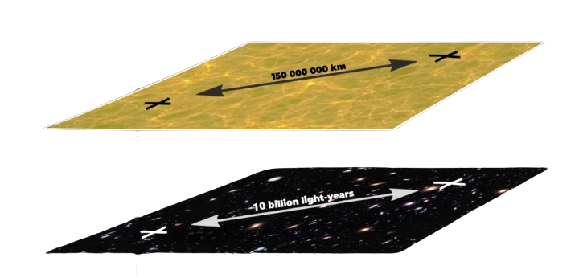

Name: Anti-De-Sitter Drive | AdS Drive
Name: Anti-De-Sitter Drive | AdS Drive
 Inventor: Milky Way "Archangels" Civilisation | Extinct
Inventor: Milky Way "Archangels" Civilisation | Extinct
Constructor: United LunaTerra Docks | Martian Technate Yards | Ceres Shipyards
Description:
By Accepting the SuperString Theory and Brane Cosmology as law, our understanding of Space travel had shifted forever.
The Archangels discovered AdS (Anti-De-Sitter) Drive allows for ships to warp into 5th dimension through Anti De Sitter space and travel in brane with greatly contracted distances
The Ship’s reactors produce significant amount of energy to power the cyclotron rings which create a “lift” into the 5th dimension from our 4 dimensions which allows for travel through AdS in greatly contracted lengths
Between our Brane, are located Brane Above and Below between which is curved geometry Anti-De-Sitter space, Geometry allowing distances to be greatly stretch above and below our universe such that gravity cannot escape, in AdS gravity remains confined within our universe and still behaves as
F ≈ GMm⁄r2
the other 2 Branes help delimit this warping leaving enough volume outside for adventures within the 5th dimension

Human known matter only able to withstand travel of equivallent 113 light years, but discovered metals that Archangels grew in a system they had created nicknamed “Kentara” could potentially erase the travel limit into infinity with greater energy cost
Such Absurd methods were needed after discovery of “Bridge” tunnels in Archangels databases which connect to vast network across galaxies, Bridge is located near Galactic Center of Milky Way.
The Drive is based on discovered Archangels military vessel buried by winds and storms on Venus, Sol System which had AdS Technologies, reverse engineered drive made by humans only half capable of actual drives used by extinct guardians of milky way